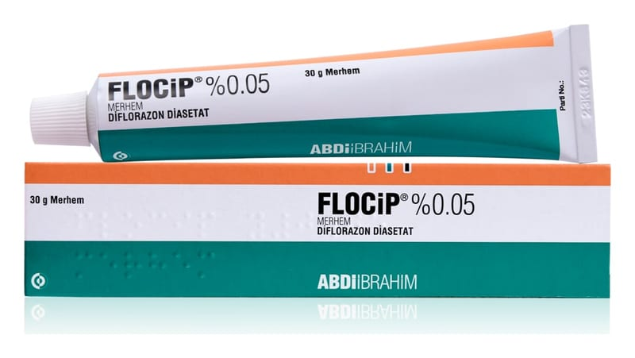

Flocip %0.05 Merhem, 30 g

Ne için kullanılır
KT · Bölüm 1FLOCİP, 30 g beyaz veya beyazımsı opak homojen merhem içeren ağzı beyaz renkli vidalı kapakla kapatılmış, alüminyum tüpte ve karton kutu içerisinde kullanıma sunulmaktadır.
FLOCİP, kortikosteroidlere cevap veren deri hastalıklarında kullanılır; iltihabi ve alerjik deri reaksiyonlarını baskılar ve kızarıklık, deri kalınlaşması, deri yüzeyinde tabaka oluşumu, ödem, kaşıntı ve diğer şikayetler (yanma hissi veya ağrı) gibi deri sorunlarından kaynaklanan belirtileri hafifletir.